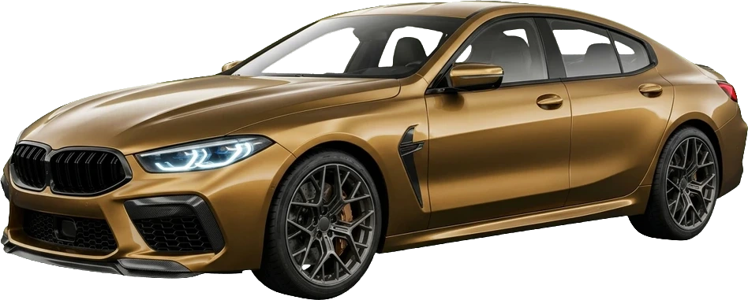

Lasergestützte Fahrwerksgeometrie und Spurkorrektur auf 0,01 Grad Genauigkeit.
IHRE AUTOWERKSTATT ZWISCHEN ERFURT, GOTHA & ARNSTADT
FISCHER KFZ-MEISTERBETRIEB
✓ KFZ-Reparaturen✓ Klimaanlagenservice
✓ Unfallinstandsetzung✓ TÜV / AU Abnahme
✓ Achsvermessung 3D✓ Bremsenservice

DIAGNOSE, FAHRWERK & MOTORSPORT-SERVICE
OEM Hochleistungs-Bremsscheiben und Keramikbeläge inklusive Bremsflüssigkeitswechsel.
Tägliche Prüfingenieur-Abnahme direkt im Haus inklusive Vorab-Diagnosecheck.